SOLUTIONS TO SELECTED EXERCISES
- 1.1 System A is better if B is used as a base and vice versa.
- 6.1 The correlation between CPU time (tCPU) and number of I/O’s (nI/O) is 0.663. The principal factors y1 and y2 are
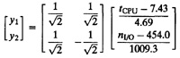
The first factor explains 83% of total variation.
- 6.2 There is no unique solution to this exercise. Depending upon the choice of outliers, scaling technique, or distance metric, different results are possible, all of which could be considered correct. One solution using no outliers, range normalization to (0,1), and Euclidean distance starts with the the normalized values shown in the following:
|
|
| Program
| CPU time
| I/O’s
|
|
|
| TKB
| 1.00
| 1.00
|
|
| MAC
| 0.92
| 0.09
|
|
| COBOL
| 0.54
| 0.01
|
|
| BASIC
| 0.38
| 0.01
|
|
| Pascal
| 0.38
| 0.00
|
|
| EDT
| 0.23
| 0.03
|
|
| SOS
| 0.00
| 0.01
|
|
BASIC, Pascal, EDT, COBOL, SOS, MAC, and TKB join the dendrogram at distances of 0.01, 0.15, 0.21, 0.38, 0.63, and 1.14, respectively.
Other possibilities are to discard TKB and MAC as outliers, normalize using the mean and standard deviation, and transform I/O’s to a logarithmic scale. All these and similar alternatives should be considered correct provided a justification is given for the choice.
- 10.1 a. Bar
- b. Line
- c. Bar
- d. Line
- 10.4 FOM=73
- 11.1 Each of the three systems can be shown to be the best by taking an average of the ratios with respect to its execution times.
- 12.1 a. 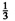
- b. 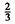
- c. 0
- d.
- e. 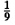
- f. 1/39
- 12.2 Mean = 1/p, variance = (1 – p)/p2, standard deviation = 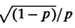, C. O. V. = 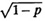
- 12.3 Mean = λ, variance = λ, C.O.V. = λ–1/2
- 12.4 a. 2λ
- b. 2λ
- c. 0
- d. 2λ
- e. –λ
- f. 5λ–1/2
- 12.5 f(x) = 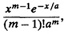
mean = am, variance = a2m, mode = a(m – 1), C.O.V. = 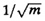
- 12.6 f(x) = ax–(a+1); mean = a/(a – 1) provided a > 1; variance = a/[(a – 1)2(a – 2)] provided a > 2; C.O.V. = [a (a – 2)]–1/2; mode = 0
- 12.7 a. 0.2742
- b. 0.5793
- c. 0.2348
- d. 6.644 seconds
- 12.8 a. Mean
- b. Mean
- c. Median
- d. Mode
- 12.9 a. Mode
- b. Median
- c. Mode
- d. Median
- e. Median
- 12.10 Since the ratio of maximum to minimum is very high, use the median. The geometric mean can also be used if a logarithmic transformation can be justified based on physical considerations.
- 12.11 Arithmetic mean since the data is very clustered together (not skewed) and ymax/ymin ratio is small.
- 12.13 Use SIQR since the data is skewed.
- 12.14 Use the coefficient of variation (or standard deviation) since the data is not skewed.
- 12.15 The normal quantile–quantile plot for this data is shown in Figure 20.2. From the plot, the errors do appear to be normally distributed.
- 13.1 a. N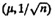
- b. N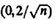
- c. N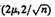
- d. N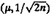
- e. X2(n)
- f. X2(2n)
- g. F(n, n)
- h. t(n)
- 13.2 a. 14 and 38
- b. 26.91
- c. (24.18, 29.64)
- d. 0.485, (0.342, 0.628)
- e. (24.79, 26.91) or (26.91, 29.03)
- 13.3 (–223.92, 4943.92), (–337.53, 4821.31), (–118.89, 2961.08), (43.77, 2593.10), and (–9.75,2554.76). The processors are not different.
- 14.2 a. Only b1 is significant.
- b. 97%
- c. 160.55
- d. (139.50, 181,60)
- e. (141.45, 179.66)
- 14.3 CPU time in milliseconds = –0.2556 + 0.0512x (memory size in kilobytes); R2 = 0.972; the 90% confidence intervals of b0 and b1 are (–1.9532, 1.4421) and (0.0433, 0.0591); the intercept is zero but the slope is significant.
- 14.4 Elasped time = 0.196 (number of days) + 0.511; the 90% confidence intervals for the regression coefficients are (0.36, 0.66) for the intercept and (0.18, 0.21) for the slope; both are significant.
- 14.5 Elapsed time = 0.635 + 0.063 × (number of keys); R2 = 0.943; the confidence intervals of the coefficients are (0.461,0.809) and (0.042,0.084), respectively.
- 14.6 Number of disk I/O’s = –3.875 + 6.625 × (number of keys); R2 = 0.846; the 90% confidence intervals for the coefficients are (–35.627, 27.877) and (2.78, 10.47); b0 is not significant.
- 14.7 Time = –15315.96 + 49.557 (record size); R2 = 0.744. Both parameters are significant. However, the scatter plot of the data shows a nonlinear relationship. The residuals versus predicted estimates show that the errors have a parabolic trend. This indicates that the errors are not independent of the predictor variables and so either other predictor variables or some nonlinear terms of current predictors need to be included in the model.
- 15.1 a. 90.25%
- b. Yes
- c. x4
- d. x2
- e. All
- f. Multicollinearity possible
- g. Compute correlation among predictors and reduce the number of predictors.
- 15.2 log(time) = –3.738 + 2.690 log(key size) – 0.152x2, where x2 = 1 ⇒ multiprocessor and x2 = 0 ⇒ uniprocessor; R2 = 0.9981. The confidence intervals of the coefficients are (–4.01, –3.46), (2.58, 2.80), and (–0.22, –0.08).
- 16.1 a. 27
- b. 9
- c. 7
- 17.1 a. q0 = 48.13, qA = 1.88 qB = –13.13, qC = –21.88, qAB = –1.88, qAC = 1.88, qBC = 26.88, and qABC = 8.13
- b. 0.24%, 11.88%, 33.01%, 0.24%, 0.24%, 49.82%, 4.55%
- c. BC, C, B, ABC, A, AB, AC
- 18.1 The effects are 50.67, 4.46, –0.89, and –6.19. The effect of workloads is not significant. Interactions explain 62.67% of the variation.
- 19.1 a. q0 + qACD = 48.13, qA + qCD = 1.88, qB + qABCD = –13.13, qC + qAD = –21.88, qAB + qBCD = –1.88, qAC + qD = 1.88, qBC + qABD = 26.88, and qABC + qBD = 8.13
- b. 0.24%, 11.88%, 33.01%, 0.24%, 0.24%, 49.82%, 4.55%
- c. BC, C, B, BD, A, AB, D. Higher order interactions are assumed smaller.
- d. See a above. The generator is I = –ACD.
- e. I = ABCD may be better.
- f. RIII
- 19.2 Yes, I = ABC; yes, I = AB; yes, I = ABCD.
- 20.1
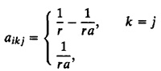
otherwise
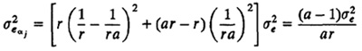
- 21.1 The confidence intervals for the differences are (–29.5632, 1.5016), (–18.8270, 12.2378), and (–4.7962, 26.2686).
- 21.3 After logarithmic transformation:
- a. 1.18% variation is explained by the processors.
- b. 96.10% variation is due to workloads.
- c. Yes, several processor pairs are significantly different at 90% confidence level.
- 21.4 a. 1.65% variation is explained by the processors.
- b. 96.04% variation is due to workloads.
- c. Yes, several processor pairs are significantly different at 90% confidence level.
- 22.1 a. Yes. All processors are significantly different from each other.
- b. 16.8%
- c. All effects and interactions are significant.
- 23.1 Ti is high for A = –1, B = –1, and E = –1; TB is high for A = –1, B = 1, and D = –1.
- 23.2 Ti is high for A = –1, B = –1, and E = –1; B is high for A = –1, B = 1, and D = –1.
- 24.1 a. Continous state, deterministic, dynamic, linear, and unstable
- b. Continuous state, deterministic, dynamic, nonlinear, and unstable
- c. Discrete time, continuous state, deterministic, dynamic, linear, and unstable
- d. Discrete time, deterministic, dynamic, linear, and unstable e. Continuous time, continuous state, dynamic, nonlinear, and stable
- f. Discrete time, continuous state, probabilistic, dynamic, linear, and unstable
- 24.2 a. Trace–driven simulation
- b. Discrete–event simulation
- c. Monte Carlo simulation
- 25.1 a. This is expected when the system is underloaded.
- b. This is quite common when the system is overloaded.
- c. This is expected.
- d. This is uncommon and would require validation.
- e. This is rare and would require serious validation effort.
- 25.2 The transient interval using the truncation method is 1, since 4 is neither the maximum nor the minimum of the remaining observations. However, this is incorrect.
- 26.1 Maximum period is 24–2 = 4; a must be 5 or 11. The seed must be odd.
- 26.2 The values of 24n mod 31 for n= 1,..., 30 are 24, 18, 29, 14, 26, 4, 3, 10, 23, 25, 11, 16, 12, 9, 30, 7, 13, 2, 17, 5, 27, 28, 21, 8, 6, 20, 15, 19, 22, 1. The smallest n that results in 1 is 30. Yes, 24 is a primitive root of 31.
- 26.3 2, 6, 7, 8
- 26.4 1155
- 26.5 x10,000 = 1,919,456,777
- 26.6 r = 9, q = 2. The condition r < q is not satisfied.
- 26.7 No, because q = 1 and r = 7, thus, r is not less than q.
- 26.8 a. Primitive
- b. Primitive
- c. Not primitive
- d. Primitive
- 26.9 a. 21
- b. 9
- c. 63
- d. 45
- 26.10 0.0000012, 0.0000112, 0–0001012, 0–0011112, 0–0100012.
- 26.11 In both cases, the additive parameter c should be replaced by c mod m.
- 26.12 The period of the lth bit is 2l.
- 27.1 The computed statistic is 6.690. The 0.9–quantile of a chi–square variate with nine degrees of freedom is 14.68. The sequence passes the test at 90%.
- 27.2 K+ = 0.2582, K– = 0.2259. Both values are less than K[0.95;15] = 1.1773. The sequence passes the test.
- 27.3 The confidence intervals for the serial autocovariances at lags 1 to 10 are (–0.003067, –0.000325), (–0.000942, 0.001800), (–0.001410, 0.001332), (–0.001592, 0.001151), (–0.000036, 0.002706), (–0.001791, 0.000951), (–0.000516, 0.002227), (–0.000741, 0.002002), (–0.002476, 0.000267), and (–0.000407, 0.002336). One autocovariance is significant.
- 27.4 The pairs generated by the first generator lie on the following two lines with a positive slope:
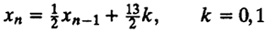
The distance between the lines is 13/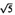. The pairs generated by the second generator lie on the following two lines with a negative slope:
xn = –2xn–1 + 13k, k = 1, 2
The distance between the lines is 13/. Both generators have the same 2–distributivity.
- 28.1 a. Inverse transformation: Generate u~U(0, 1). If u < 0.5, then x = 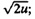 otherwise x = 2 – 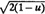.
- b. Rejection: Generate x ~ U(0, 2) and y ~ U(0, 1). If y ≤ min(x,2 x), then output x; otherwise repeat with another pair.
- c. Composition: The pdf f(x) can be expressed as a weighted sum of a left triangular density and a right triangular density.
- d. Convolution: Generate u1 ~ U(0, 1) and u2 ~ U(0, 1). Return u1 + u22.
- 29.1 a. Geometric
- b. Negative binomial
- c. Logistic
- d. Normal
- e. Lognormal
- f. Pareto
- g. Poisson
- h. Chi square
- i. F
- j. Exponential
- k. Erlang–m
- l. Binomial
- m. Beta
- 29.2 a. N(0,1), 1.281
- b. X2(4), 7.779
- c. F(2,2), 9.00
- d. t(3), 1.638
- 30.1 Erlang–k arrivals, general bulk service, five servers, 300 waiting positions, 5000 population size, and last come, first served preemptive resume service.
- 30.2 Because it provides 10 waiting positions for a population of only 5. Also, two servers have no waiting positions.
- 30.3 Both will provide the same performance. Increasing buffers beyond the population size has no effect.
- 30.5 If k = 1.
- 31.1 a. 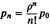, where 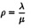
- b. p0 =e–ρ
- c. E[n] = ρ
- d. 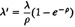
- e. E[r] = 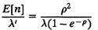
- 31.2 a. , where
- b. p0 = e–ρ
- c. E[n] = ρ
- d. Var[n] = ρ
- e. E[r] = 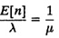
- 31.3 a. 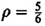
- b. E[s] = 1/µ = E[r](1 – ρ) = 0.5 second
- c. λ = µρ = 10/6 ⇒ 60(10/6) = 100 queries per minute
- d. E[n] =
 = 5
= 5
- e. P(n > 10) = ρ11 = 0.135
- f. r90 = E[r]ln[10] = 6.9 seconds
- g. w90 = E[r]ln[10ρ] = 6.36 seconds
- 30.4 E[n] = λE[r] = 10,800/3600 × 1/3 = 1. Job flow balance was assumed. Service time distribution has no effect.
- 31.4 a. p = 30/3 × (1/0.05) = 0.5
- b. p0 = 0.21
- c. 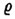 = 0.24
- d. E[n] = 1.7
- e. E[nq] = 0.25
- f. E[r] = 0.0579 second
- g. Var[r] = 0.00296 second2
- h. w90 = 0.0287 second
- 31.5 a. λ = 30/3 = 10 ⇒ ρ = 0.5
- b. p0 = 0.50
- c. = 0.50
- d. E[n] = 1 request per drive
- e. E[nq] = 0.5 request per drive
- f. E[r] = 0.1 second
- g. Var[r] = 0.01 second2
- h. w90 = 0.16 second
- 31.6 Yes. With the new system, the 90–percentile of the waiting time will be zero.
- 31.7 Yes, since with λ = 0.167/2 = 0.0833, average waiting time is 0.18 minute and the 90–percentile of waiting time is zero.
- 31.8 a. p0 = 0.22, p1 = 0.34, p2 = 0.25, p3 = 0.13, p4 = 0.0629
- b. E[n] = 1.5 requests
- c. E[nq] = 0.0629 request
- d. Var[n] = 1.3
- e. λ = 28 requests per second
- f. Loss rate = 1.9 requests per second
- g. U = ρ(1 – pB) = 0.5(1 – 0.0629) = 0.47
- h. E[r] = 0.0522 second
- 31.9
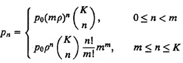
where 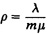
Average throughput 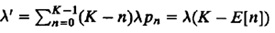
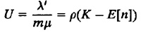
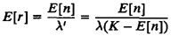
- 31.10
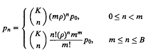
where
Average throughput λ´ = λ (K – E[n] –(K – B)pB where pB is the probability of B jobs in the system.
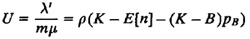
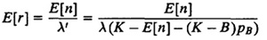
- 32.1 a. Job flow balance
- b. Fair service
- c. Single resource possession
- d. Routing homogeneity
- e. No blocking
- f. Single resource possession
- g. One–step behavior
- 33.1 × = 400/10 = 40, S = 1/200, U = XS = 40/200 = 20%
- 33.2 n=4, × = 5, n = XR ⇒ R = 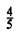 second
- 33.3 × = 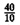 = 4, Vdisk = 2, Xdisk = XVdisk = 8, Sdisk = 0.030, Udisk = XdiskSdisk = 0.24 ⇒ 24%
- 33.4 Xprinter = 500/10 50, Vprinter = 5, X = Xprinter/Vprinter = 10 jobs/minute
- 33.5 a. 25, 20, and 4
- b. D1 = 1, D2 = 0.6, D3 = 0.1
- c. Uk = XDk ⇒ X = 0.6/0.6 = 1; UCPU = 1, UB = 0.1
- d. Uk = XDk ⇒ X = 0.1/0.1 = 1; R = N/X – Z = 20/1 – 5 = 15 seconds
- 33.6 a. CPU
- b. Rmin = D1 + D2 +D3 = 1.7
- c. 60%
- d. Dmax = 1, Uk = XDk ⇒ X ≤ 1 job/second
- e. R ≥ max{D, NDmax – Z} ≤ Dmax 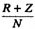 = 0.6. We need at least a 40% faster CPU; disk A would be just OK.
- f. D = 1.7, Dmax = 1, Z = 5, X ≤ min 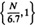, R ≥ max {1.7, N – 5}
- 33.7 a. D1 = 0.5 ≤ disk A
- b. D2 = 1.2 ≤ disk A
- c. D3 = 0.2 ≤ CPU
- d. D4 = 2 ≤ disk B
- 34.1 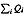 = 5.01, R = 6.26 seconds
- 34.2
|
|
|
| Response Time
|
|
| Queue Lengths
|
|
|
| System
|
|
| N
| CPU
| Disk A
| Disk B
| System
| Throughput
| CPU
| Disk A
| Disk B
|
|
| 1
| 0.040
| 0.030
| 0.025
| 1.700
| 0.149
| 0.149
| 0.090
| 0.015
|
| 2
| 0.046
| 0.033
| 0.025
| 1.904
| 0.290
| 0.333
| 0.189
| 0.029
|
| 3
| 0.053
| 0.036
| 0.026
| 2.149
| 0.420
| 0.559
| 0.299
| 0.043
|
| 4
| 0.062
| 0.039
| 0.026
| 2.443
| 0.537
| 0.838
| 0.419
| 0.056
|
| 5
| 0.074
| 0.043
| 0.026
| 2.795
| 0.641
| 1.179
| 0.546
| 0.068
|
|
- 34.3
|
|
|
| Response Time
|
|
| Queue Lengths
|
|
|
| System
|
|
| Iteration No.
| CPU
| Disk A
| Disk B
| System
| Throughput
| CPU
| Disk A
| Disk B
|
|
| 1
| 0.293
| 0.220
| 0.183
| 12.467
| 1.145
| 8.397
| 5.038
| 0.840
|
| 2
| 0.359
| 0.174
| 0.045
| 12.629
| 1.135
| 10.185
| 3.939
| 0.204
|
| 3
| 0.427
| 0.142
| 0.030
| 13.640
| 1.073
| 11.454
| 3.053
| 0.128
|
| 4
| 0.475
| 0.117
| 0.028
| 14.334
| 1.034
| 12.291
| 2.421
| 0.116
|
| 5
| 0.507
| 0.099
| 0.028
| 14.767
| 1.012
| 12.826
| 2.003
| 0.112
|
|
- 34.4 R = (n + 2)S, X = 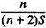, n ≤ 1
- 34.5 R = (n + h)S, X = 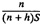, Power X/R is maximum at n = h.
- 34.6 The balanced job bounds are
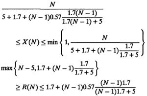
|
|
| Response Time
| Throughput
|
|
|
|
|
| N
| Lower
BJB
| MVA
| Upper
BJB
| Lower
BJB
| MVA
| Upper
BJB
|
|
| 1
| 1.700
| 1.700
| 1.700
| 0.149
| 0.149
| 0.149
|
| 2
| 1.844
| 1.904
| 1.954
| 0.288
| 0.290
| 0292
|
| 3
| 1.988
| 2.149
| 2.510
| 0.399
| 0.420
| 0.429
|
| 4
| 2.131
| 2.443
| 3.215
| 0.487
| 0.537
| 0.561
|
| 5
| 2.275
| 2.795
| 4.005
| 0.555
| 0.641
| 0.687
|
| 6
| 2.419
| 3.213
| 4.848
| 0.609
| 0.731
| 0.809
|
| 7
| 2.563
| 3.706
| 5.726
| 0.653
| 0.804
| 0.926
|
| 8
| 3.000
| 4.278
| 6.629
| 0.688
| 0.862
| 1.000
|
| 9
| 4.000
| 4.930
| 7.549
| 0.717
| 0.906
| 1.000
|
| 10
| 5.000
| 5.658
| 8.483
| 0.742
| 0.938
| 1.000
|
|
- 34.7 a. X = 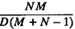, R = 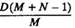
- b. Substituting Davg = Dmax = D/M and Z = 0 in Equations (34.8) and (34.9), we get the same expressions as in Exercise 34.6 for balanced job bounds.
- 35.1 P(QCPU = n | N = 3) for n = 0, 1, 2, 3 are 0.108, 0.180, 0.293, and 0.419, respectively. The X(N) for N = 1, 2, 3 are 0.588, 0.798, and 0.892, respectively.
- 35.2 P(QCPU = n | N = 3) for n = 0, 1, 2, 3 are 0.580, 0.298, 0.103, and 0.018, respectively.
- 36.1 X = 0.588, 0.796, and 0.892 for N = 1, 2, 3, respectively; R = 1.700, 2.506, 3.365 for N = 1, 2, 3, respectively.
- 36.2 The service rates of the FEC are 1.429, 1.628, and 1.660, respectively, for one through three jobs at the service center.